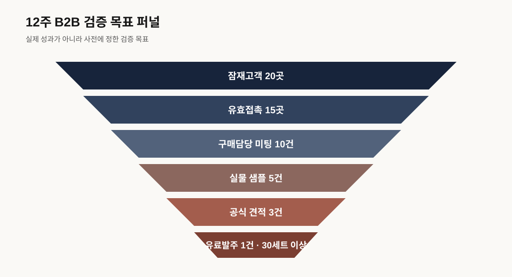

실행관리 문서
B2B 로컬기프트 12주 WBS
상점 5곳 → 표준키트 1종 → 고객 20곳 → 30세트 유료납품
목표
상점 5곳의 상품으로 표준키트 1종을 만들고 잠재고객 20곳에 영업하여 30세트 이상 유료발주 1건을 오류 없이 납품한다.
1. 역할
| 역할 | 책임 |
|---|---|
| PM·영업 | 예산·고객·미팅·견적·계약 |
| 소싱 | 상점·공급조건·동의·정산 |
| 상품·콘텐츠 | 구성·포장·카드·카탈로그 |
| 운영·품질 | 조달·검수·포장·배송 |
| 웹·데이터 | QR·CRM·주문·KPI |
2. 작업패키지
| 기간 | 작업 | 완료기준 |
|---|---|---|
| 1~3주 | 후보 15곳, 상점 10곳 접촉, 7곳 면담, 5곳 선정 | 공급가·수량·리드타임·동의 |
| 1~3주 | 구매자 20곳 목록, 담당자 인터뷰 5건 | 예산·수량·납기·대안 기록 |
| 3~5주 | 표준키트·원가·표시·권리·샘플 | 실물 5세트, 30·50·100 원가표 |
| 5~6주 | 카탈로그·견적·거래조건·CRM | 영업문서 전부 작동 |
| 6~10주 | 20곳 접촉·10미팅·5샘플·3견적 | 발주서 또는 예약금 1건 |
| 10~11주 | 조달·입고검수·포장·납품·정산 | 30세트 이상·누락 0·납기준수 |
| 11~12주 | 사후면담·손익·성과·사업판단 | 계속·수정·중단 결정 |

3. 12주 간트
| 작업 | 1 | 2 | 3 | 4 | 5 | 6 | 7 | 8 | 9 | 10 | 11 | 12 |
|---|---|---|---|---|---|---|---|---|---|---|---|---|
| 관리 | ● | ● | ● | ● | ● | ● | ● | ● | ● | ● | ● | ● |
| 상점소싱 | ● | ● | ● | ● | ||||||||
| 구매자조사 | ● | ● | ● | |||||||||
| 상품·샘플 | ● | ● | ● | |||||||||
| 영업도구 | ● | ● | ||||||||||
| B2B 영업 | ● | ● | ● | ● | ● | |||||||
| 조달·납품 | ● | ● | ||||||||||
| 평가 | ● | ● |
4. 승인 게이트
| 시점 | 통과조건 | 미통과 조치 |
|---|---|---|
| 3주 G1 | 담당자 인터뷰 5·상점후보 5 | 상품제작 전 재조사 |
| 5주 G2 | 원가표·표시·샘플 5 | 마진 음수면 구성·가격 수정 |
| 7주 G3 | 카탈로그·견적·계약·CRM | 미완료면 샘플배포 금지 |
| 10주 G4 | 견적 3·유료발주 1 | 발주 없으면 재고조달 금지 |
| 11주 G5 | 30세트·납기·오류 0 | 원인분석 후 추가주문 중단 |
| 12주 G6 | 손익·재구매·반복공급 | 계속·수정·중단 |
5. 판단
- 계속: 견적 3건, 30세트 유료납품, 공헌이익 양수, 상점 3곳 반복공급
- 수정: 발주는 있으나 마진·납기·맞춤업무 기준미달
- 중단: 20곳 영업 후 견적 없음 또는 30세트에서도 손실
6. 지원사업 적합성
| 순위 | 제도 | 적합도 | 활용 |
|---|---|---|---|
| 1 | 인천 관광스타트업 | 5/5 | 로컬IP·관광기념품 |
| 2 | 예비관광벤처 | 5/5* | 샘플·시장검증 |
| 3 | 로컬크리에이터 | 5/5 | 공동상품·판로 |
| 4 | 관광기업지원센터 | 4/5* | 공간·MICE 네트워크 |
| 5 | 콘텐츠·예비창업 | 3/5* | 브랜드·범용 MVP |
| 6 | TIPS | 1/5 | 현재 부적합 |
지원 전에는 상점동의, 공급조건, 샘플 5세트, 고객 20곳 영업, 견적 3건, 30세트 유료납품과 실제 공헌이익을 확보한다. QR·CRM·AI를 붙이는 것만으로 기술 R&D가 되지 않으므로 TIPS는 독립 B2B 소프트웨어와 민간투자가 생긴 뒤 검토한다.
개항장 B2B 로컬기프트 실행·지원사업 통합문서